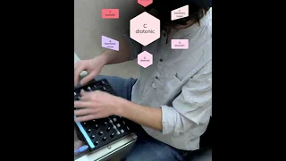
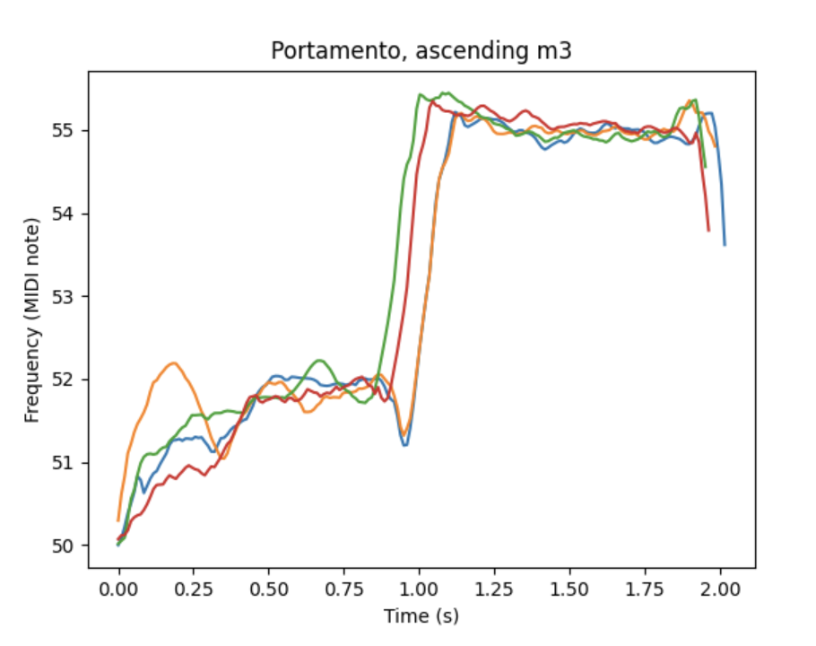
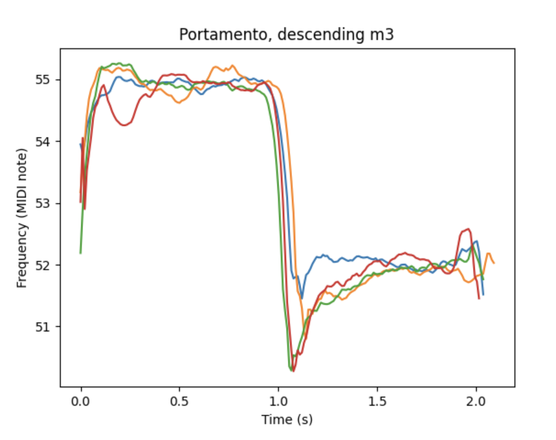
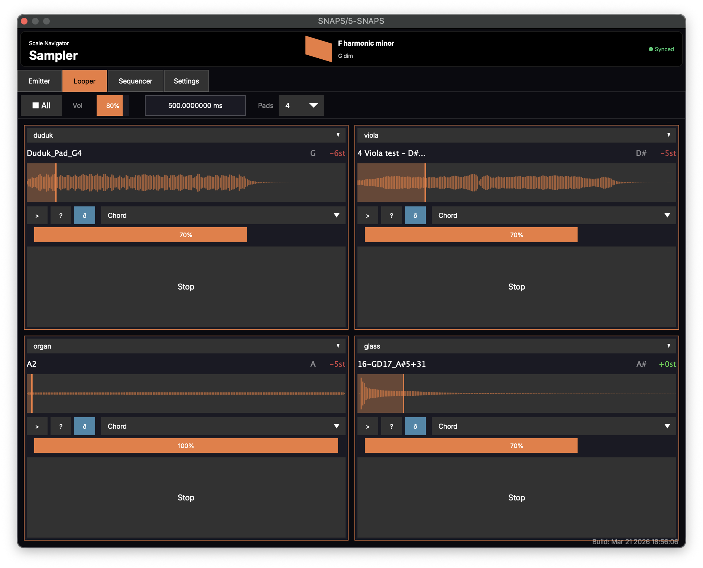
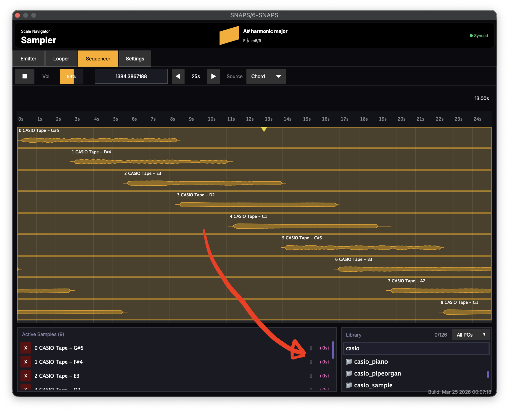

SNaPS
Role · Designer & developer (interaction, product, sample corpus, plugin port)
With · Nathan Ho (SuperCollider engine, glide-curve research)
Platforms · SuperCollider instrument → VST3 / AU (macOS, Windows)
The modulation is the event: dozens of voices leaning into the new chord, a few making a theatrical exit.
Problem
Every sampler I knew treated a sample as if it had a single pitch. Assign a recording to the keyboard and the sampler re-pitches it chromatically across the keys, a digital Mellotron. That works for a piano note or a kick drum. But the sounds I wanted to play weren't like that: they were little recordings of harmony, a cello double stop, a choir chord, several bells ringing together, fragments of counterpoint. The sampler knew where the sample began and how fast to play it. It had no idea what notes were inside it.
SNaPS starts by giving it that knowledge. Every sample is born knowing its pitch classes, and once it knows them, following the harmony becomes simple arithmetic: how far does this recording have to move so that the notes inside it fit the current scale?
Insight
A sample that knows its notes
Instead of asking what MIDI note triggered the sample, the engine checks the pitches inside the recording against the Current Scale. If they're a subset of the scale, the sample plays untransposed; if they'd be a subset after transposition, it plays at that transposition; if no transposition fits, it doesn't play.
The same check runs again at every scale change, and that's where the instrument lives. A sample that's already sounding re-checks itself and bends to fit in real time, because harmony doesn't respect the boundary of a note: if the chord changes while a violin sustains, the violin doesn't restart, she keeps singing through the change. A conventional sampler either lets the sustaining sample clash or cuts and retriggers it, and you can hear the retrigger. Once a sample knows what notes it contains, the rest of SNaPS follows: the transpositions, the glides, the theatrical exits, even the Librarian.
Prototype
2021: the SuperCollider engine
SNaPS started as a SuperCollider instrument that Nathan Ho and I built together, and the idea itself descends from Ho's conception of sound dumplings: hand-assembled collages of samples repitched into a common key and arranged into a single gesture. A finished dumpling is a static object, like hardened lava. The question behind SNaPS was what happens if you keep it molten: live, mobile blobs that collage themselves automatically and re-pitch as the harmony moves.
Before development began I wrote the whole system out as a design document, the "Sample Particle System." The triggering logic above is nearly verbatim from that spec, which already contained the ramped transposition that became the glide.
Nathan built the engine, and Scale Navigator integration was there in week one ("Debounce scale changes from MIDI," March 26, 2021). I owned the sample corpus, the metadata standard, and my own performance file. As I described it to a friend once development was underway: "Snaps! Scale Navigator particle system, a super collider back end coded by Nathan ho. Basically, samples trigger at regular intervals. The script is listening for changes to scale Navigator. When the scale changes, the script will transpose the currently playing scales. So that they fit the harmonic context of the current scale. [For a] particular genre, I just have to choose samples that fit in that particular genre."
The repo lives under nhthn/, Ho's account, and it is now completely open source: all you need is an Akai MIDImix, SuperCollider, a DAW and Loopback, and a properly-tagged sample library, and you're good to go! For years I performed out of an instrument hosted in my collaborator's GitHub, and contributed engine code back through reviewed PRs.
Failure
The instrument outgrew its own language

Performing with the SuperCollider version: navigating the scale network while SNaPS re-pitches the texture.
For four years the SuperCollider version was my primary live instrument: pretty much everything sample-based on my YouTube and SoundCloud before 2026 is running SNaPS SuperCollider.
Then it hit a ceiling. By late 2025 I'd extended Ho's rhythm grid into my own polyrhythm system, with Clock Divide / Multiply and humanize-rhythm parameters. Push it hard enough and it fell over: 16th notes at 250 BPM and the whole thing would crash.
On February 17, 2026, Ho and I spent two hours debugging it. Ho did the worst-case arithmetic out loud: 180 BPM × tempo factor 2 × 32nd-note subdivision = one note every 5.2 milliseconds. The instrument had outgrown SuperCollider. The plugin's first commit is three weeks later, March 8, 2026.
Drone Jam, February 2022: the SuperCollider instrument performing live, steered from the Scale Navigator.
Eyes/Eggs of Unstable Crystal, livestreamed with the Dashboard and an Akai MIDImix.
Iteration
The tagging bottleneck
Every sample the engine plays has to be born knowing its own pitch content, so it can be born into the current scale. For years that meant tagging thousands of samples by hand with their pitch classes. I had the corpus and no way to listen to each one.
The unblock came from Ho, in early 2026, when he pointed me at Basic Pitch, Spotify's open-source ML transcription model. I built the Librarian around it: a headless tool (MVP January 31, 2026) that auto-transcribes a sample library into sample→pitch-class-set records. The interface couldn't scale until metadata became automatic.

The Librarian's data model, sketched on the concept canvas: each sample paired with its pitch-class set (holst_cello_1 [c, d, e], paolo_8 [df, f, af]…).
Final solution
Voice leading as arithmetic
When the harmony changes, a texture of dozens of voices has to decide where each one moves. The naive rule is "transpose each sample to the nearest scale tone." That produces a wandering, arbitrary result, voices leaping in whatever direction is technically closest. Real ensembles don't sound like that. Trained voices move by the least sufficient motion, with a slight downward gravity that corpus studies find in actual voice leading. So I made the modulation a cost function instead of a rule:
the cost of a candidate transposition is its size in semitones plus a fixed penalty for upward motion; candidates are confined to a bounded range wider below than above; ties resolve downward.
Small moves beat large ones. Downward moves beat upward moves of equal size. The aggregate texture modulates the way an ensemble does, by the least sufficient motion.
The glide itself carries the same logic, and its shape is entirely Ho's, from his oddvoices research. He couldn't find much published data on portamento, so he collected his own: a singer performing ascending and descending two-note melodies with "natural portamento," run through a pitch tracker. Ascending glides prepare, dipping below the starting pitch before they rise, about 70 cents on a minor third. Descending glides overshoot, dropping nearly a semitone and a half past the target and settling up into it. Never the reverse, which makes sense physiologically: "you're much more likely to involuntarily relax in pitch rather than tense up." SNaPS samples glide along that measured shape, like a voice, not a machine.


Ho's oddvoices measurements, four sung takes of a minor third each way: ascending glides dip before they rise, descending glides plunge past the target and settle up into it. OddVoices models the shape in quarter-sine-wave segments, and SNaPS glides inherit it.
What I rejected: a single hard-coded glide (mechanical, wrong for half the material), and a UI-first plugin design. The interface barely changed from prototype to release. Almost all the design work happened in the behavior.
Design decision
Seeing the particles
The plugin's main view makes the particle metaphor visible. Each dot is one playing sample traveling left to right across its lane: its life begins at the left edge and ends at the right, so long samples drift while short ones streak past, and the lane reads as a field of particles moving at different speeds. A sample with more than one pitch class stacks two or more dots vertically, and every dot grows and shrinks with its sample's loudness, so the density and dynamics of the texture are legible at a glance. I drew it as a swarm because a swarm behaves like an ensemble in a way a sample list never could.

The first sketch of the emitter view: every dot is one playing sample, born at the left edge, gone at the right.

The sketch dropped into a full wireframe: eight emitter lanes, each its own particle field (March 29, 2026).

The working build two days later: stacked dots for multi-pitch samples, dot size following loudness.
Design decision
Three modes, one engine
The modes accumulated across the collaboration with Ho. The first particles were one-shots, emitted to form a cloud: a swarm of nanobots or drones that reshapes itself to fit the weather, where the weather patterns are the harmonic state. Even within the one-shots we kept exploring. Emission started random, and then I added alphanumeric ordering, which opened an isorhythmic possibility: sequence the samples alphanumerically into the order of a melody, a tone row, and you have the colore of a 14th-century isorhythm, the repeating pitch cycle, with the emission rhythm as its talea, the repeating rhythmic cycle laid against it. When the two cycles are different lengths, the same melody keeps landing on different rhythms with every pass, which is the whole medieval trick. Change the harmony and the colore is given, literally, new colors. The metaphors kept compounding as we went: swarm, drone swarm, particle cloud, colore.
Then came the question of particles with a different kind of life span, one whose life never ends, and that's a loop. The Sequencer, a canvas where samples are laid out in time, only arrived in the JUCE C++ era.
The plugin plays the same particle engine three ways. Emitter streams samples continuously at a chosen rate, Looper holds chosen samples as sustaining loops on pads, and Sequencer lays samples out on a timeline. Whatever is sounding when the scale changes obeys the same rule in every mode: bend to fit, or make an exit. The window itself is scale-aware too: the whole interface takes on the root color of the current scale, so the three screenshots on this page are red, orange, and gold because they were taken in C, F, and A♯.

Looper mode in F harmonic minor: duduk, viola, organ, and glass held as loops, each badge showing how far its sample has bent to fit (−6st, −5st, +0st).

Sequencer mode in A♯ harmonic major: Casio tape samples staggered across the timeline, the active-samples list tracking each one's transposition.
Design decision
The failure is the instrument
Sometimes a sample's pitch content no longer fits the new harmonic state. The obvious solution is to fade it out or mute it, but that throws away an opportunity. Instead, those moments can become transitions. Rather than disappearing, a sample can narrow to the notes that still fit using a band-pass filter, then open back up when the harmony allows it. The stutters and Doppler-style exits grew out of exploring those kinds of transitions.
Those exits are stackable: a stutter, a filter sweep, a Doppler-style pitch drop. The sound leaves on purpose, audibly, as a gesture you can score with. In SNaPS the modulation is the event: the moment the harmony changes is the thing you hear, a texture of dozens of voices leaning into the new chord and a few of them making a scene on the way out.
Outcome
In the studio I routed SNaPS multitrack through Loopback into separate Ableton channels, so it worked as a source, not just a live rig. In 2025 the engine was ported into Ensemble Jammer as browser instruments, and in 2026 it became a plugin, so the workflow I'd performed with for five years finally packages for any DAW (Logic Pro, Ableton Live, anything that hosts VST3 or AU) and subscribes to Dashboard's shared harmonic state like the rest of the ecosystem.
Samplerate Counterpoint, an album made entirely with SNaPS. The samples bend and transpose across time the way voices move in counterpoint, and since the samples can themselves be recordings of counterpoint, it becomes a counterpoint of counterpoints.
Ho, writing about sound dumplings on his own site: "If you do want to hear examples of sound dumpling music, I recommend checking out my friend Nathan Turczan's work under the name Equuipment. He took my sound dumpling idea and expanded on it by introducing key changes and automated collaging of samples in SuperCollider, and the results are very colorful and interesting."
What's still unfinished
The crash that triggered the port isn't cleanly solved; it's outrun, moved into a language where the timing math doesn't fall over. The plugin's preset system is an open problem. And the Librarian's transcription is only as good as Basic Pitch is: a mistagged sample is born into the wrong scale.
Credits
Nathan Ho: the SuperCollider engine, the glide-curve research, the Basic Pitch pointer, and the February 2026 pair-debugging session. Michael Szanyi: the Webb Schools dance-show set. The original repo is open source under Ho's account.
Related work
Scale Navigator Dashboard — the harmonic state that SNaPS subscribes to
Tonalign — MIDI pitch correction with the same scale-aware logic
Ensemble Jammer — networked instruments that follow the shared harmonic state
NotesChordScales — the inverse direction: play notes, and the system infers the scale